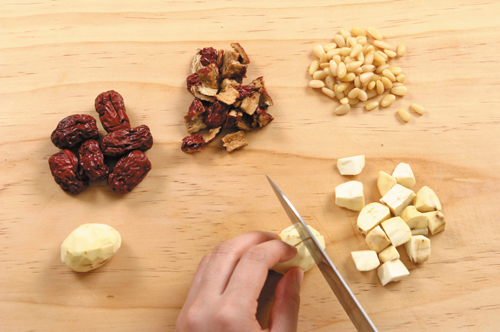
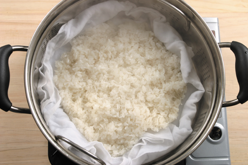
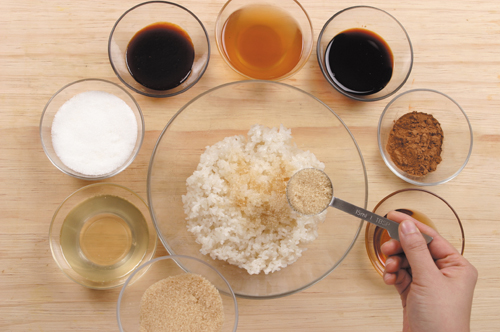
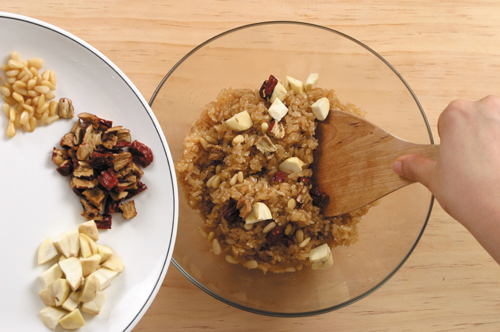
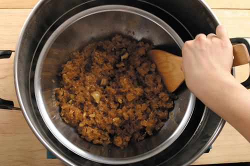

 1. Клейкий рис тщательно промойте и замочите в воде на 3 ч, выложите в дуршлаг и оставьте на 10 мин, чтобы стекла вода.
Китайские финики оботрите салфеткой и срежьте мякоть ножом по кругу так, чтобы получилось 5 кусочков. Каштаны очистите от кожуры и разрежьте на 6 частей.
У кедровых орехов ядрышки очистите от пленки и оботрите салфеткой.
 2. Поставьте воду в пароварку на сильный огонь, когда появится пар, постелите влажную марлю, выложите клейкий рис. Готовьте на пару на сильном огне в течение 20 мин, спрысните соленой водой, равномерно размешайте деревянной лопаткой и готовьте еще 30 мин.
В кастрюлю с водой положите косточки китайских фиников, накройте крышкой и варите на среднем огне в течение 15 мин, затем пропустите через сито.
 3. В кастрюлю насыпьте сахар и поставьте на средний огонь (примерно на 3 минуты); когда сахар растает, добавьте растительное масло; когда сахар растает и превратится в коричневую жидкость, налейте крахмальную воду, тщательно перемешайте и поварите примерно 1 минуту – соус для лепешек яксик готов.
 4. В пропаренный клейкий рис, пока он горячий, добавьте соевый соус канчжан, соус яксик, желтый сахар, корицу. Налейте воду, в которой варились косточки китайских фиников, мед, сахар и кунжутное масло. Равномерно перемешайте, затем добавьте китайские финики, каштаны и кедровые орехи и тщательно перемешайте.
 5. Поместите полученную смесь для лепешек яксик в пароварку и готовьте на пару в воде: 9 мин на сильном огне, затем на среднем огоне и готовьте примерно 20 мин. Затем равномерно перемешайте лопаткой. Переключите на слабый огонь и готовьте на пару еще 20 мин, затем еще раз тщательно перемешайте, чтобы все специи равномерно распределились, и продолжайте готовить на пару еще 10 мин.